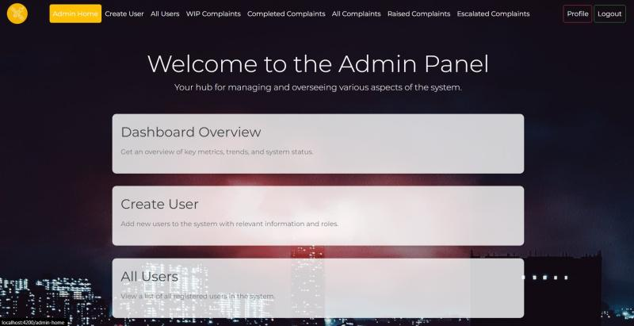

Screenshots

Dashboard
Dashboard showing complaint statuses, analytics, and key metrics.

Complaint Details
Detailed view of individual complaints with actions and history.

Reports
Reports and insights on complaints handled over time.